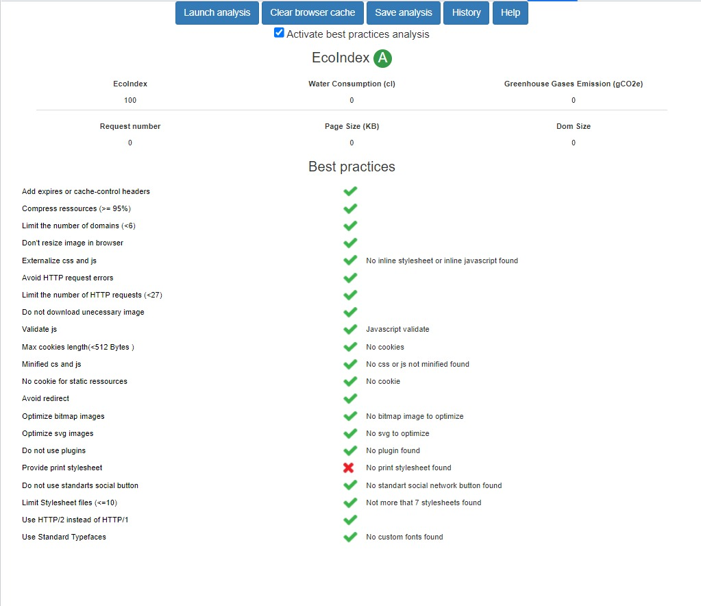

Introduction
La pollution de la ressource en eau se caractérise par la présence des micro-organismes, des substances chimiques ou des déchets industriels, ce qui impacte la qualité de l’eau potable desservie à la population. Pour ce projet, dont l’objectif est de créer une application web permettant la visualisation interactive des jeux de données, on s’est intéressé au problème de conformité de l’eau du robinet aux limites en vigueur en France.
Description des jeux de données
Les données choisies touchent les sujets suivant :
• Le premier jeu de données qu’on a utilisé représente les résultats du contrôle sanitaire réglementaire de l'eau du robinet dans toutes les communes de la France pour la période 2016-2021. Ce jeu de données nous a permis de calculer la moyenne mensuelle de la conformité bactériologique et chimique de chaque département ainsi que classer les départements par domaines et calculer la composition en nature de la ressource d’eau pour chaque domaine de conformité. Le site fournissant le dataset correspondant est disponible ici.
• Le deuxième jeu de données correspond aux mesures des concentrations de nitrates d’origine agricole en eaux souterraines et superficielles pour la période 2018-2019. Les résultats sont issus de la campagne de surveillance des concentrations en nitrates dans les milieux aquatiques qui a lieu tous les quatres ans. A travers ces données, nous sommes en mesure de visualiser l’impact de l’agriculture sur les ressources d’eau et, par conséquent, sur la complexité et le coût du traitement. Les données sont disponibles ici.
Architecture
Cette figure illustre l’architecture :

Traitement de données
a) Traitement
• conformité de l'eau distribuée
Le traitement appliqué sur ce jeu de données consiste à calculer, pour chaque département, les pourcentages de conformité bactériologique et chimique de l'eau distribuée dans les robinets ainsi que dans la phase de captage.
En outre, après avoir réparti les départements en groupes selon le pourcentage de conformité de l'eau, on calcule les pourcentage des sources constituant chaque groupe.
• concentrations moyennes annuelles en nitrate
Le traitement appliqué sur le jeu de données consiste à extraire les concentrations moyennes annuelles en nitrate en (mg/l) pour les stations utilisées pour le rapportage nitrates, ainsi que l’emplacement de ces dernières.
b) Limitations
Le manque de certaines données nous a empêché d’avoir une application plus enrichie qui concrétise toutes nos idées de visualisation. En effet, les mesures des concentrations de nitrates d’origine agricole en eaux souterraines et superficielles se font une fois tous les quatres ans, et donc on était limité à travailler avec les données de ces mesures pour toute la période D’autre part, l’idée de base était d’avoir une application qui permet de visualiser l’impact d’autres facteurs sur la qualité de l’eau, comme les déchets industriels et domestiques, la sécheresse, les pesticides utilisés en agriculture etc. Malheureusement, l’application est limitée au seul facteur de nitrate d’origine agricole soit à cause de l’absence de données pour les autres facteurs ou bien que les données correspondent à des années anciennes par rapport à la période de notre étude.
Green-IT
Notre site web est développé de telle façon qu’il soit éco-friendly, pour cela nous avons mesuré EcoIndex à l’aide d’une extension sur chrome qui s’appelle Green IT analysis. Parmis les principes respectés :
• 1 seule HTTP Request.
• Pas de cookie.
• Pas de plugins.
• CSS et JS minifiés.
• 0 redirect.
